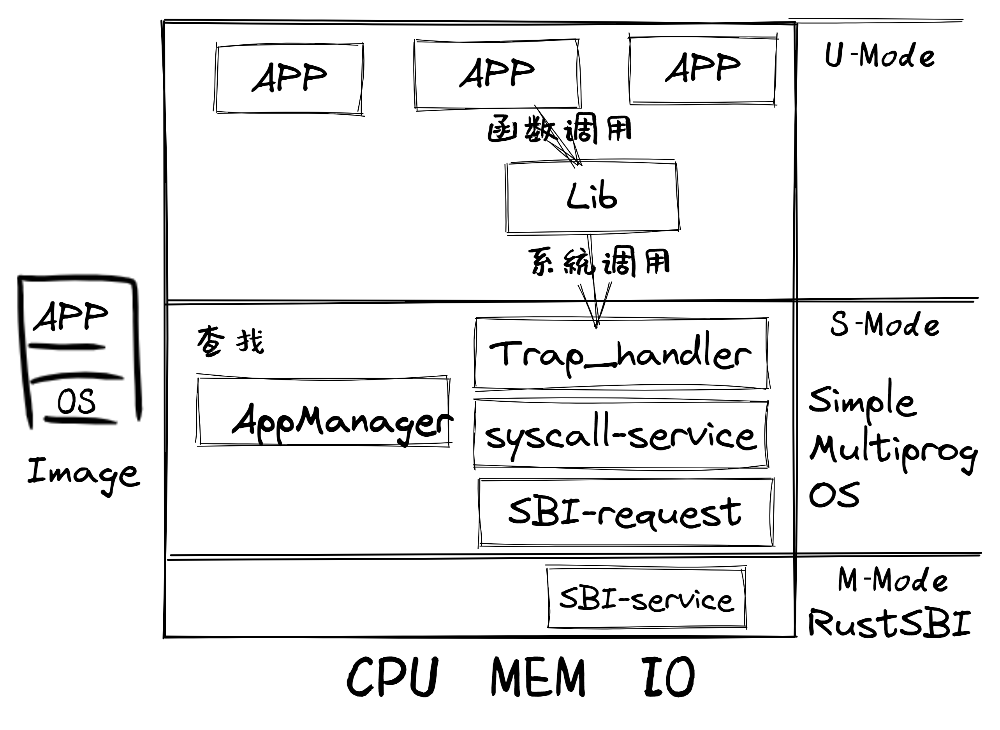
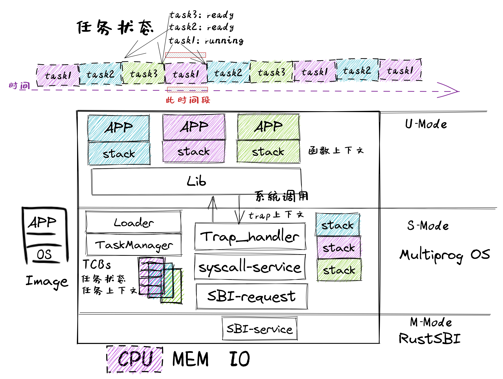
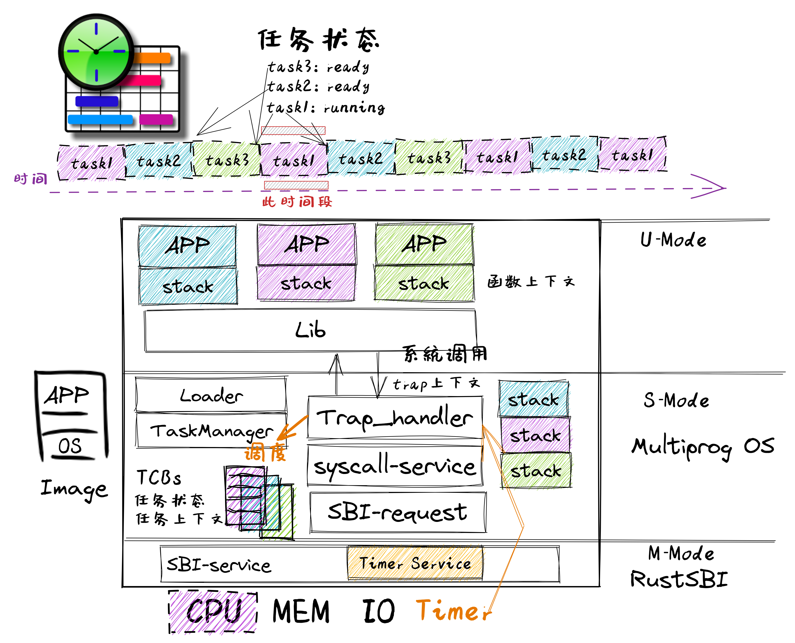

引言#
本章导读#
提高系统的性能和效率是操作系统的核心目标之一，本章展现了操作系统在性能上的一系列功能改进：
通过提前加载应用程序到内存，减少应用程序切换开销
通过协作机制支持程序主动放弃处理器，提高系统执行效率
通过抢占机制支持程序被动放弃处理器，保证不同程序对处理器资源使用的公平性，也进一步提高了应用对 I/O 事件的响应效率
上一章，我们实现了一个安全的“邓式鱼” 批处理操作系统。首先，它能够自动按照顺序加载并运行序列中的每一个应用，当一个应用运行结束之后无需操作员的手动替换；另一方面，在硬件级特权隔离机制的帮助下，运行在更高特权级的操作系统不会受到有意或者无意出错的应用的影响；在硬件异常触发机制的帮助下，可以全方位监控运行在用户态低特权级的应用执行，一旦应用越过了特权级界限或主动申请获得操作系统的服务，就会触发 Trap 并进入到批处理系统中进行处理。无论原因是应用出错或是应用声明自己执行完毕，批处理系统都只需要加载应用序列中的下一个应用并让其执行。可以看到批处理系统的特性是：在内存中同一时间最多只需驻留一个应用。这是因为只有当一个应用出错或退出之后，批处理系统才会去将另一个应用加载到相同的一块内存区域。
而计算机硬件在快速发展，内存容量在逐渐增大，处理器的速度也在增加，外设 I/O 性能方面的进展不大。这就使得以往内存只能放下一个程序的情况得到很大改善，但处理器的空闲程度加大了。于是科学家就开始考虑在内存中尽量同时驻留多个应用，这样处理器的利用率就会提高。但只有一个程序执行完毕后或主动放弃执行，处理器才能执行另外一个程序。我们把这种运行方式称为 多道程序（Multiprogramming） 。
协作式操作系统#
早期的计算机系统大部分是单处理器计算机系统，由于计算机系统很昂贵，所以是多人共用一台计算机。当处理器进一步发展后，它与 I/O 的速度差距也进一步拉大。这时计算机科学家发现，在 多道程序 运行方式下，一个程序如果不让出处理器，其他程序是无法执行的。如果一个应用由于 I/O 操作让处理器空闲下来或让处理器忙等，那其他需要处理器资源进行计算的应用还是没法使用空闲的处理器资源。于是就想到，让应用在执行 I/O 操作或空闲时，可以主动 释放处理器 ，让其他应用继续执行。当然执行 放弃处理器 的操作算是一种对处理器资源的直接管理，所以应用程序可以发出这样的系统调用，让操作系统来具体完成。这样的操作系统就是支持 多道程序 或 协作式多任务 的协作式操作系统。
抢占式操作系统#
计算机科学家很快发现，编写应用程序的科学家（简称应用程序员）来自不同的领域，他们不一定有友好互助的意识，也不了解其它程序的执行情况，很难（也没必要）有提高整个系统利用率上的大局观。在他们的脑海里，整个计算机就应该是为他们自己的应用准备的，不用考虑其他程序的运行。这导致应用程序员在编写程序时，无法做到在程序的合适位置放置 放弃处理器的系统调用请求 ，这样系统的整体利用率还是无法提高。
所以，站在系统的层面，还是需要有一种办法能强制打断应用程序的执行，来提高整个系统的效率，让在整个系统中执行的多个程序之间占用计算机资源的情况相对公平一些。根据计算机系统的硬件设计，为提高 I/O 效率，外设可以通过硬件中断机制来与处理机进行 I/O 交互操作。这种硬件中断机制可随时打断应用程序的执行，并让操作系统来完成对外设的 I/O 响应。
而操作系统可进一步利用某种以固定时长为时间间隔的外设中断（比如时钟中断）来强制打断一个程序的执行，这样一个程序只能运行一段时间（可以简称为一个时间片, Time Slice）就一定会让出处理器，且操作系统可以在处理外设的 I/O 响应后，让不同应用程序分时占用处理器执行，并可通过统计程序占用处理器的总执行时间，来评估运行的程序对处理器资源的消耗。我们把这种运行方式称为 分时共享（Time Sharing） 或 抢占式多任务（Multitasking） ，也可合并在一起称为 分时多任务 。
我们可以把一个程序的一次完整执行过程称为一次 任务 (Task)，把一个程序在一个时间片（Time Slice）上占用处理器执行的过程称为一个 任务片 (Task Slice)。操作系统对不同程序的执行过程中的 任务片 进行调度和管理，即通过平衡各个程序在整个时间段上的任务片数量，就能达到一定程度的系统公平和高效的系统效率。在一个包含多个时间片的时间段上，会有属于不同程序的多个任务片在轮流占用处理器执行，这样的操作系统就是支持 分时多任务 或 抢占式多任务 的抢占式操作系统。
注解
支持多道程序的各种操作系统
支持多道程序的第一台计算机是 1961 年的英国 Leo III 计算机，支持在计算机内存中加载几个不同的程序，并从第一个开始依次运行。当第一个程序到达等待外围设备的指令时，该程序的执行上下文被保存下来，内存中的第二个程序就有机会运行。该过程一直持续到所有程序运行完毕。但 1960 年以后，美国人已经占领了英国计算机市场的大部分，他们的机器设计得更好，更可靠，最重要的是更便宜。随着时间的推移，英国的计算机制造逐渐消失。
协作式操作系统
对于计算机硬件而言，中断机制很早就出现了，但利用中断机制实现抢占式多任务，会涉及到不少并发的问题，这对操作系统设计是一个比较大的挑战。所以一些相对简单的操作系统采用协作式的任务调度管理方式，如微软早期（1990~1998 年）的 Windows 3.x/9x 操作系统和苹果早期（1987~2001 年）的 Mac OS 操作系统中的 MultiFinder 扩展功能。Windows 和 Mac OS 都是有着漂亮的 GUI 界面的操作系统，它们都采用了协作多任务处理模型，这意味着只有在前台应用程序主动让出控制权时（比如，在等待键盘或鼠标输入时），才将 CPU 时间分配给后台应用程序执行。由于具有便于没有计算机知识的人上手的GUI界面，尽管早期 Windows 操作系统任务管理能力较弱，它仍迅速占领 PC 市场，统治了我们的桌面。
分时共享（Time Sharing）的本质
1959 年 1 月 1 日，John McCarthy 在 MIT 的一份未发表的备忘录中提出了分时共享最初想法：“我想提出一个在 IBM 709 计算机上的操作系统的设计思路，它将大大减少用户/程序员在机器上求解问题的时间 … 。能够让计算机以可承受的成本提供快速响应的唯一方法是通过分时共享。也就是说，当一个用户对某些输出进行处理时，计算机必须去照顾到其他用户。我认为该提案指出了未来所有计算机的操作方式，我们有机会在计算机使用方式上开拓出一大步。”
在 1961 年的春天，John McCarthy 进一步解释了他的远见卓识：“我所说的分时计算机系统是指通过一些远程控制台与许多用户同步互动的计算机系统。这样一个系统对每个用户来说就像一台大型的私人电脑。当用户需要服务时，他只需开始输入请求服务的信息。计算机随时准备关注他可能敲击的任何键。因为程序可能 … 在人与人之间的互动中只做相对较短的工作,所以必须不断地在二级存储中来回穿梭,这是不经济的做法。因此,需要有一个大的主存储器。 … 最后的要求是二级存储要足够大,以维持用户的文件,这样用户就不需要有单独的卡或磁带输入输出单元。”
从 John McCarthy 的文章中，我们可以看到，分时共享的核心目标是让多个用户共享使用一台计算机，且每个用户感觉自己是在独占这台强大的计算机。为达到这一目标，需要计算机硬件和操作系统充分协作，达到两个要素：及时响应和快速执行。首先，计算机要有硬件中断机制，这样在必要的时候（用户敲键盘或时间片到了），硬件能通过中断打断当前执行的应用程序，把控制权交给操作系统，让操作系统切换到需要及时响应用户需求的应用程序。其次，计算机要有足够大的主存，这样应用程序都能放到主存中，这是实现快速保存/恢复程序执行状态并能快速持续执行程序的重要条件之一。
抢占式操作系统：支持现代云计算的古老 Compatible Time-Sharing System (CTSS) 操作系统
抢占式操作系统的典型代表是支持分时多任务的操作系统。CTSS 操作系统是 MIT 的 Fernando J. Corbató 带领团队开发的第一个分时操作系统。CTSS 于 1961 年 11 月首次在 MIT 的 IBM 709 上演示，在 1963-1973年期间，为麻省理工学院用户提供服务。CTSS 的“兼容性”是指兼容以往的批处理运行方式，即在同一台计算机上运行后台作业，这通常比分时功能使用更多的计算资源。
CTSS 操作系统包括一个位于处理器保护模式（内核态）中的内核，内核中的监管功能只能通过软件中断（即系统调用接口）来调用，这与运行在内核态的现代操作系统一样。处理器分配调度算法是多级反馈队列算法，调度的时间片单位为 200 ms。硬件产生时钟中断后会跳转到 CTSS 操作系统内核中进行进一步处理（比如进行任务切换）。
CTSS 操作系统的实现允许一台昂贵的大型机被大量不同用户群分时并发使用，且每个用户感觉上是在独占这台强大的机器，这在当时引起了广泛的关注，并影响了后续一系列操作系统的发展，现在的操作系统基本上都支持分时共享的基础功能。CTSS 是操作系统又一个革命性的突破。
本章所介绍的多道程序和分时多任务系统都有一些共同的特点：在内存中同一时间可以驻留多个应用，而且所有的应用都是在系统启动的时候分别加载到内存的不同区域中。由于目前计算机系统中只有一个处理器核，所以同一时间最多只有一个应用在执行（即处于运行状态），剩下的应用处于就绪状态或等待状态，需要内核将处理器分配给它们才能开始执行。一旦应用开始执行，它就处于运行状态了。
本章主要是设计和实现建立支持 多道程序 的二叠纪“锯齿螈” 1 初级操作系统、支持 多道程序 的三叠纪“始初龙” 2 协作式操作系统和支持 分时多任务 的三叠纪“腔骨龙” 3 抢占式操作系统，从而对可支持运行一批应用程序的多种执行环境有一个全面和深入的理解，并可归纳抽象出 任务 、 任务切换 等操作系统的概念。
提示
同学也许会有疑问：由于只有一个处理器，即使这样做，同一时间最多还是只能运行一个应用，还浪费了更多的内存来把所有的应用都加载进来。那么这样做有什么意义呢？
同学可以带着这个问题继续看下去。后面我们会介绍这样做到底能够解决什么问题。
提示
批处理与多道程序的区别是什么？
对于批处理系统而言，它在一段时间内可以处理一批程序，但内存中只放一个程序，处理器一次只能运行一个程序，只有在一个程序运行完毕后再把另外一个程序调入内存，并执行。即批处理系统不能交错执行多个程序。
对于支持多道程序的系统而言，它在一段时间内也可以处理一批程序，但内存中可以放多个程序，一个程序在执行过程中，可以主动（协作式）或被动（抢占式）地放弃自己的执行，让另外一个程序执行。即支持多道程序的系统可以交错地执行多个程序，这样系统的利用率会更高。
实践体验#
多道程序 (Multiprogramming) 和 分时多任务 (Time-Sharing Multitasking) 对于应用的要求是不同的，因此我们分别为它们编写了不同的应用，代码也被放在两个不同的分支上。对于它们更加深入的讲解请参考本章正文，我们在引言中仅给出运行代码的方法。
获取多道程序的代码：
$ git clone https://github.com/rcore-os/rCore-Tutorial-v3.git
$ cd rCore-Tutorial-v3
$ git checkout ch3-coop
获取分时多任务系统的代码：
$ git clone https://github.com/rcore-os/rCore-Tutorial-v3.git
$ cd rCore-Tutorial-v3
$ git checkout ch3
在 qemu 模拟器上运行本章代码：
$ cd os
$ make run
多道程序的应用分别会输出一个不同的字母矩阵。当他们交替执行的时候，我们将看到字母行的交错输出：
[RustSBI output]
[kernel] Hello, world!
AAAAAAAAAA [1/5]
BBBBBBBBBB [1/2]
CCCCCCCCCC [1/3]
AAAAAAAAAA [2/5]
BBBBBBBBBB [2/2]
CCCCCCCCCC [2/3]
AAAAAAAAAA [3/5]
Test write_b OK!
[kernel] Application exited with code 0
CCCCCCCCCC [3/3]
AAAAAAAAAA [4/5]
Test write_c OK!
[kernel] Application exited with code 0
AAAAAAAAAA [5/5]
Test write_a OK!
[kernel] Application exited with code 0
[kernel] Panicked at src/task/mod.rs:106 All applications completed!
分时多任务系统应用分为两种。编号为 00/01/02 的应用分别会计算质数 3/5/7 的幂次对一个大质数取模的余数，并会将结果阶段性输出。编号为 03 的应用则会等待三秒钟之后再退出。以 k210 平台为例，我们将会看到 00/01/02 三个应用分段完成它们的计算任务，而应用 03 由于等待时间过长总是最后一个结束执行。
[RustSBI output]
[kernel] Hello, world!
power_3 [10000/200000]
power_3 [20000/200000]
power_3 [30000/200000power_5 [10000/140000]
power_5 [20000/140000]
power_5 [30000/140000power_7 [10000/160000]
power_7 [20000/160000]
power_7 [30000/160000]
]
power_3 [40000/200000]
power_3 [50000/200000]
power_3 [60000/200000]
power_5 [40000/140000]
power_5 [50000/140000]
power_5 [60000/140000power_7 [40000/160000]
power_7 [50000/160000]
power_7 [60000/160000]
]
power_3 [70000/200000]
power_3 [80000/200000]
power_3 [90000/200000]
power_5 [70000/140000]
power_5 [80000/140000]
power_5 [90000/140000power_7 [70000/160000]
power_7 [80000/160000]
power_7 [90000/160000]
]
power_3 [100000/200000]
power_3 [110000/200000]
power_3 [120000/]
power_5 [100000/140000]
power_5 [110000/140000]
power_5 [120000/power_7 [100000/160000]
power_7 [110000/160000]
power_7 [120000/160000200000]
power_3 [130000/200000]
power_3 [140000/200000]
power_3 [150000140000]
power_5 [130000/140000]
power_5 [140000/140000]
5^140000 = 386471875]
power_7 [130000/160000]
power_7 [140000/160000]
power_7 [150000/160000/200000]
power_3 [160000/200000]
power_3 [170000/200000]
power_3 [
Test power_5 OK!
[kernel] Application exited with code 0
]
power_7 [160000/160000]
7180000/200000]
power_3 [190000/200000]
power_3 [200000/200000]
3^200000 = 871008973^160000 = 667897727
Test power_7 OK!
[kernel] Application exited with code 0
Test power_3 OK!
[kernel] Application exited with code 0
Test sleep OK!
[kernel] Application exited with code 0
[kernel] Panicked at src/task/mod.rs:98 All applications completed!
[rustsbi] reset triggered! todo: shutdown all harts on k210; program halt. Type: 0, reason: 0
输出结果看上去有一些混乱，原因是用户程序的每个 println! 往往会被拆分成多个 sys_write 系统调用提交给内核。有兴趣的同学可以参考 println! 宏的实现。
另外需要说明的是一点是：与上一章不同，应用的编号不再决定其被加载运行的先后顺序，而仅仅能够改变应用被加载到内存中的位置。
本章代码树#
锯齿螈多道程序操作系统 - Multiprog OS的总体结构如下图所示：
{kind=link}
通过上图，大致可以看出Qemu把包含多个app的列表和MultiprogOS的image镜像加载到内存中，RustSBI（bootloader）完成基本的硬件初始化后，跳转到MultiprogOS起始位置，MultiprogOS首先进行正常运行前的初始化工作，即建立栈空间和清零bss段，然后通过改进的 AppManager 内核模块从app列表中把所有app都加载到内存中，并按指定顺序让app在用户态一个接一个地执行。app在执行过程中，会通过系统调用的方式得到MultiprogOS提供的OS服务，如输出字符串等。
始初龙协作式多道程序操作系统 – CoopOS的总体结构如下图所示：
{kind=link}
通过上图，大致可以看出相对于MultiprogOS，CoopOS进一步改进了 AppManager 内核模块，把它拆分为负责加载应用的 Loader 内核模块和管理应用运行过程的 TaskManager 内核模块。 TaskManager 通过 task 任务控制块来管理应用程序的执行过程，支持应用程序主动放弃 CPU 并切换到另一个应用继续执行，从而提高系统整体执行效率。应用程序在运行时有自己所在的内存空间和栈，确保被切换时相关信息不会被其他应用破坏。如果当前应用程序正在运行，则该应用对应的任务处于运行（Running）状态；如果该应用主动放弃处理器，则该应用对应的任务处于就绪（Ready）状态。操作系统进行任务切换时，需要把要暂停任务的上下文（即任务用到的通用寄存器）保存起来，把要继续执行的任务的上下文恢复为暂停前的内容，这样就能让不同的应用协同使用处理器了。
腔骨龙分时多任务操作系统 – TimesharingOS的总体结构如下图所示：
{kind=link}
通过上图，大致可以看出相对于CoopOS，TimesharingOS最大的变化是改进了 Trap_handler 内核模块，支持时钟中断，从而可以抢占应用的执行。并通过进一步改进 TaskManager 内核模块，提供任务调度功能，这样可以在收到时钟中断后统计任务的使用时间片，如果任务的时间片用完后，则切换任务。从而可以公平和高效地分时执行多个应用，提高系统的整体效率。
位于 ch3 分支上的腔骨龙分时多任务操作系统 – TimesharingOS 的源代码如下所示：
这里
1./os/src
2Rust 18 Files 511 Lines
3Assembly 3 Files 82 Lines
4
5├── bootloader
6│ └── rustsbi-qemu.bin
7├── LICENSE
8├── os
9│ ├── build.rs
10│ ├── Cargo.toml
11│ ├── Makefile
12│ └── src
13│ ├── batch.rs(移除：功能分别拆分到 loader 和 task 两个子模块)
14│ ├── config.rs(新增：保存内核的一些配置)
15│ ├── console.rs
16│ ├── entry.asm
17│ ├── lang_items.rs
18│ ├── link_app.S
19│ ├── linker-qemu.ld
20│ ├── loader.rs(新增：将应用加载到内存并进行管理)
21│ ├── main.rs(修改：主函数进行了修改)
22│ ├── sbi.rs(修改：引入新的 sbi call set_timer)
23│ ├── sync
24│ │ ├── mod.rs
25│ │ └── up.rs
26│ ├── syscall(修改：新增若干 syscall)
27│ │ ├── fs.rs
28│ │ ├── mod.rs
29│ │ └── process.rs
30│ ├── task(新增：task 子模块，主要负责任务管理)
31│ │ ├── context.rs(引入 Task 上下文 TaskContext)
32│ │ ├── mod.rs(全局任务管理器和提供给其他模块的接口)
33│ │ ├── switch.rs(将任务切换的汇编代码解释为 Rust 接口 __switch)
34│ │ ├── switch.S(任务切换的汇编代码)
35│ │ └── task.rs(任务控制块 TaskControlBlock 和任务状态 TaskStatus 的定义)
36│ ├── timer.rs(新增：计时器相关)
37│ └── trap
38│ ├── context.rs
39│ ├── mod.rs(修改：时钟中断相应处理)
40│ └── trap.S
41├── README.md
42├── rust-toolchain
43└── user
44 ├── build.py(新增：使用 build.py 构建应用使得它们占用的物理地址区间不相交)
45 ├── Cargo.toml
46 ├── Makefile(修改：使用 build.py 构建应用)
47 └── src
48 ├── bin(修改：换成第三章测例)
49 │ ├── 00power_3.rs
50 │ ├── 01power_5.rs
51 │ ├── 02power_7.rs
52 │ └── 03sleep.rs
53 ├── console.rs
54 ├── lang_items.rs
55 ├── lib.rs
56 ├── linker.ld
57 └── syscall.rs
本章代码导读#
本章的重点是实现对应用之间的协作式和抢占式任务切换的操作系统支持。与上一章的操作系统实现相比，有如下一些不同的情况导致实现上也有差异：
多个应用同时放在内存中，所以他们的起始地址是不同的，且地址范围不能重叠
应用在整个执行过程中会暂停或被抢占，即会有主动或被动的任务切换
这些实现上差异主要集中在对应用程序执行过程的管理、支持应用程序暂停的系统调用和主动切换应用程序所需的时钟中断机制的管理。
对于第一个不同情况，需要对应用程序的地址空间布局进行调整，每个应用的地址空间都不相同，且不能重叠。这并不要修改应用程序本身，而是通过一个脚本 build.py 来针对每个应用程序修改链接脚本 linker.ld 中的 BASE_ADDRESS ，让编译器在编译不同应用时用到的 BASE_ADDRESS 都不同，且有足够大的地址间隔。这样就可以让每个应用所在的内存空间是不同的。
对于第二个不同情况，需要实现任务切换，这就需要在上一章的 Trap 上下文切换的基础上，再加上一个 Task 上下文切换，才能完成完整的任务切换。这里面的关键数据结构是表示应用执行上下文的 TaskContext 数据结构和具体完成上下文切换的汇编语言编写的 __switch 函数。一个应用的执行需要被操作系统管理起来，这是通过 TaskControlBlock 数据结构来表示应用执行上下文的动态执行过程和状态（运行态、就绪态等）。而为了做好应用程序第一次执行的前期初始化准备， TaskManager 数据结构的全局变量实例 TASK_MANAGER 描述了应用程序初始化所需的数据， 而对 TASK_MANAGER 的初始化赋值过程是实现这个准备的关键步骤。
应用程序可以在用户态执行中主动暂停，这需要有新的系统调用 sys_yield 的实现来支持；为了支持抢占应用执行的抢占式切换，还要添加对时钟中断的处理。有了时钟中断，就可以在确定时间间隔内打断应用的执行，并主动切换到另外一个应用，这部分主要是通过对 trap_handler 函数中进行扩展，来完成在时钟中断产生时可能进行的任务切换。 TaskManager 数据结构的成员函数 run_next_task 来具体实现基于任务控制块的任务切换，并会具体调用 __switch 函数完成硬件相关部分的任务上下文切换。
如果理解了上面的数据结构和相关函数的关系和相互调用的情况，那么就比较容易理解本章改进的“锯齿螈”、“始初龙”和“腔骨龙”操作系统了。